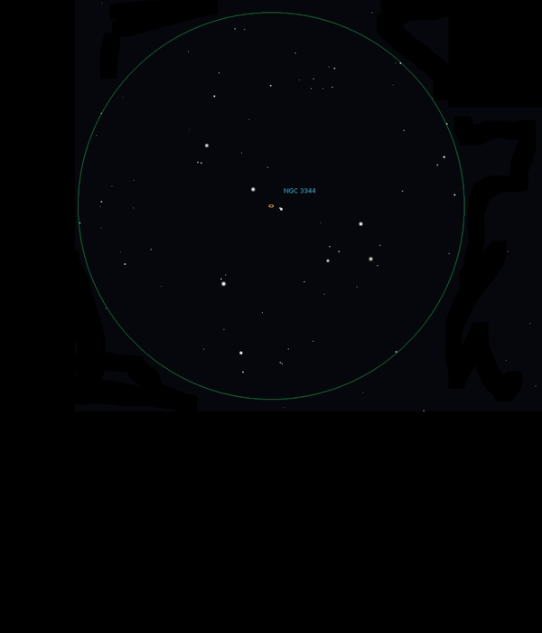

NGC 3344
Barred
Spiral Galaxy in Leo Minor
NGC 3344
Mag 10.5
25/03/16
A really
distinctive asterism frames this very faint but quite
large Galaxy, making it easy to locate
An arrow, or
spade in 25mm with a star of Mag 9.75 at it's point,
with stars of Mags 9.85 and 10.25 forming the sides of
the point (or the spade)
In 12mm NGC
3344 surrounds two very close stars of Mags 10.40 and
11.85, unclear whether this is a double star, however
a just past full Moon just
starting to rise, washing out the sky
Definitely
worth
another look on a moonless night